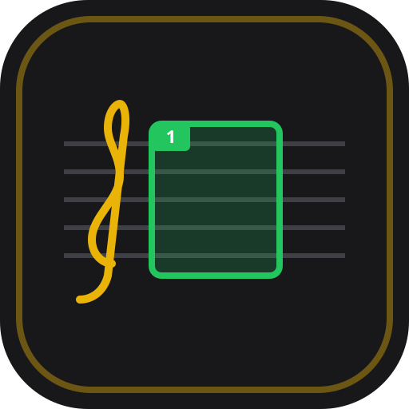

Notový Trenažér
Knihovna
Hraní
Laboratoř
0
📷 Fotit noty
📁 PDF/Obrázek
💾 Export zálohy
📥 Obnovit ze zálohy
Uložené skladby (
0
)
Strana 1 uložena.
📷 + Další strana
✔ Hotovo
✂ Nastavte okraje not
✔ Oříznout
✖ Zrušit
✔ Uložit takt
🎼 Uložit jako Klíč
🔄 Změnit
🗑 Smazat
✖ Zrušit
◀ +1
+1 ▶
⛶
📦 Takt
✏️ Tužka
🧹 Guma
👁️
↩
📷 +Str
✂
Hraní
◀
1/1
▶
▶
−
60
+
2/4
3/4
4/4
5/4
6/8
1/4
−5
+5
✏️
🧹
👁️
↩
🔍 1:1
◀
Takt #1
▶
✔ Zvládnuto
▶
60
BPM
➔ Cíl: 100
Start:
60
−5
+5
Cíl:
100
−5
+5
+Krok
Taktů
Doby
↺ Reset